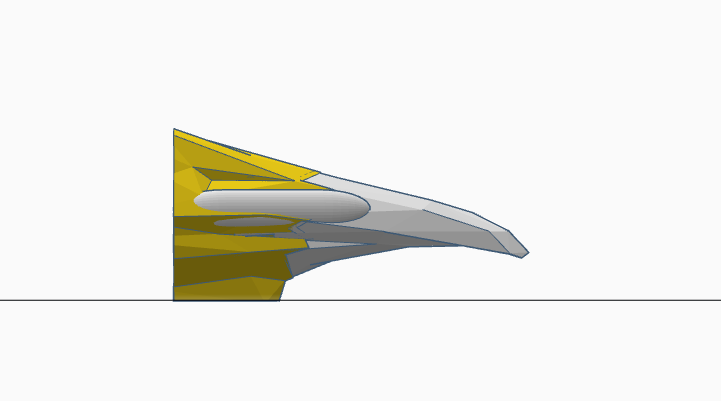
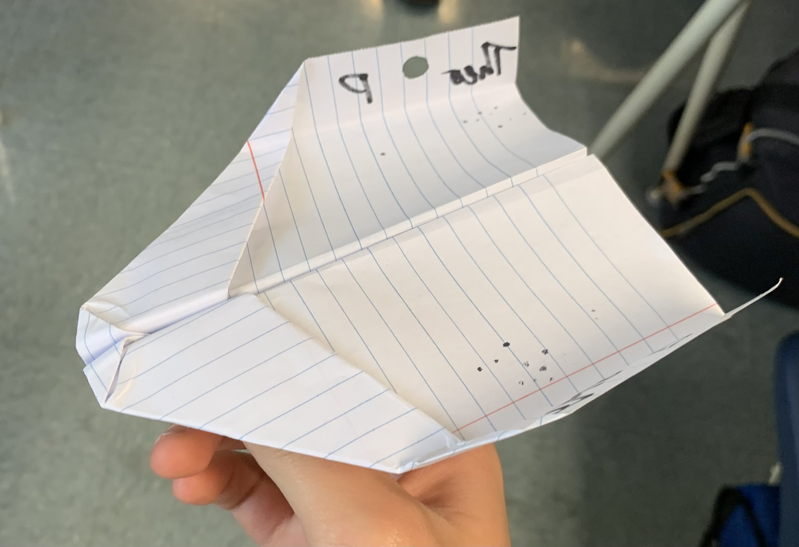
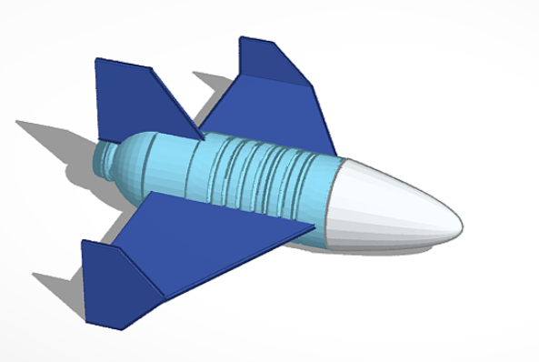
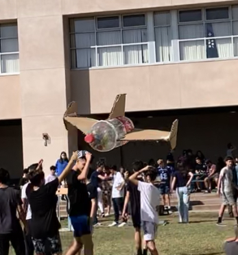
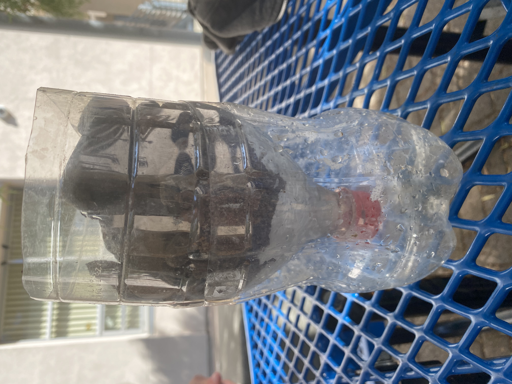
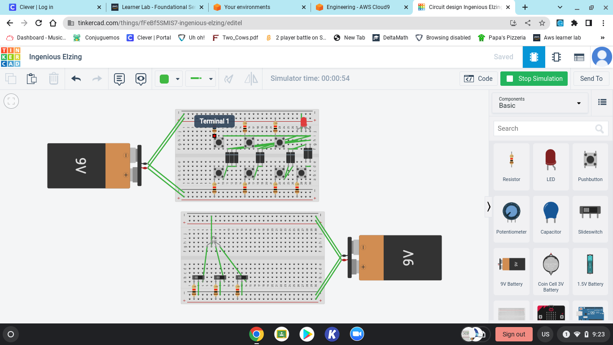

On this week we focused a lot on making our Rube Goldberg machines.
After designing them the week prior we finally started building
them on Monday. My group chose my desgn and after a couple small
changes we got to work building. Within the class period we were
able to finish building our machine with all of its components.
We were able to work together well and efficantly build the machine
with time to spare. As well as do a couple tests with our remaining
time. On wednesday we worked more on our rube goldburg machines
however as our group was finished we had time to walk around and
talk to other groups about their projects. On friday we built a
paper boat with weights on it. Our boat had a large bottom and high
walls to keep water out. With our good design our boat lasted 5
minutes at which point it sank. All in all this week was fun and
I enjoyed friday's challenge quite a bit.
Week 5 blog 9/19
This week in class we tested our rube goldberg machine. After making
one quick adjustment for an arm which would hold out the balloon our
machine was complete. We barrowed a needle and then attatched it to an
arm which rotated to pop the balloon. On our first try it worked and
we were able to prove that our machine was effective. After testing we
were able to watch other groups test and work on their machines. This
was interesting as we were many other approaches to the challenge.
Other groups used pulleys as well as a wider use of cars and rolling
objects. For the rest of the week we spent out time watching other
groups test. We also discussed how the different machines worked and
why they worked so well. This week was fun and I enjoyed having the
time to see other groups thought process when designing their machines.
Week 6 blog 9/26
This week in class we worked on dissecting a computer. We started off
the week with a presentation by a profesional computer engineer about
the different parts of a computer. He explained what the components
did and why they were needed to help a computer run smoothly. Then on
Wednesday we started dissecting a computer, after a the long process
of removing the case and exposing all of the internals we had finised
our dissection. It took us all of the class period on Wednesday and
the beginning of class on Friday to finish as we encountered some
problems with removing the case. In the end though we were able to
sucessfully deassemble the computer without damaging its components.
After finishing we then reassembled our computer in reverse order and
were able to put the components back into their correct places. After
finishing we completed a worksheet on the internals of the computer.
We also got the chance to look around at other groups and their
progress. All in all this week was another fun experience.
Week 7 blog 10/3
This week in class we learned about biomedical engineering. On Monday we had a presentation biomedical engineering. Afterwards on wednesday we had a design callenge about making animal prosthetics. For the challenge I decided to make a prosthetic beak for a bird. The prosthetic would be made out of fiberglass composites and would be molded to fit the remaining beak or face of the bird. Then on friday we had a challenge about making PB&J sandwiches. We had to write up detailed instructions on how one should best make said sandwiches, after which we made sandwiches according to others instructions. This challenge taught me the importance of detailed instructions and was a fun way to spend my friday. Finally we got to look at engineering jobs and see what kind of pay, hours, and skills that were required for an entry level engineering job. 
Week 8 blog 10/10
This week in class we learned about aerospace engineering. On Tuesday we had an introduction to Aerospace engineering. Afterwhich we got a design challenge, constructing a bottle-rocket aeroplane in tinker cad. My approach to the challenge of creating a sucessful aeroplane was to add a vertical stabalizer to keep the plane flying in a straight line and lifting surfaces to keep the plane in the air for as long as possible. For the main wing I designed it into a delta shape to reduce aerodynamic instabiality and added winglets to maintain stabiality at high speeds and posibly increase the wing's efficiency. Afterwards on thursday we got another design challenge. We were tasked with constructing a "flying paper" to reach a bucket. We had to then thrown our "flying paper" off of a 2nd floor balcony to reach said bucket. I chose to make a paper plane with a large wing area to allow it to fly longer, as well as a frontward center of mass to keep it from stalling. In the end however my paperm plane did not live up to expectations and did not reach the bucket. On Friday our week was wrapped up with a presentation on aerospace engineering by a profesional engineer and we were able to get information about the many different sub-cateragories of the aerospace world. Week 8 was another good week and I enjoyed learning about aerospace.  
Week 9 blog 10/17
This week in class we learned more about aerospace engineering. On Monday we started construction on the bottle rockets. After some quick design changes our rocket came togeter nicely and with some testing we got it to work. We also had to add some extra weight in the front to help balance out the plane as it had a tendancy to stall backwards midair. After finishing construction and testing on wednesday we were able to go around and see other group's projects. We discovered the other maners that groups used to design their rockets. As well as the different design philosophies used. Then on Friday to wrap off the week we tested our rockets. Our plane did quite well placing within the top 5 for our class and making our group happy with the results. Afterwards we threw it a couple times just to enjoy all of the hard work that we put into it and then retired it from use. 
Week 10 blog 10/26
This week in class we learned more about Environmental Engineering. On Monday we started the week with a presentation on the basics of environmental engineering. In the presentation we learned about how water treatment facilities work and the process of cleaning water. We also learned about the importance of keeping the environment clean as well as ways that engineers reduce pollution. As well as the impact of industurial activities on the greater environment and local ecosystem. Addiionally we learned of the various places and expected pay for environmentl engineers. Then on thursday we had an engineering challenge. We were tasked with designing and constructing a water filter. We put our matireals in the following order. We started with a layer of tissues to filter out small particulates, then on top of that we put sand, to filter out larger partiles, and then small rocks to filter out larger particles, and large rocks to filter out larger particles. We filtered the things in order of largest->smallest as the larger particles would clog the tissues, reducing the filtering efficancy of the system. 
Week 11 blog 10/31
This week in class we learned more about Electrical Engineering. On Monday we started the week with a presentation on the basics of electrical engineering. In the presentation we learned about how electrical circuits work and the process of building them. We also practiced making cirucits and limiting the current to allow lights to run. We then had to make series and parellel circuits. Then after class I designed a multicolor LED light that would display various colors based on lights that the user pressed. This side project allowed me to get a deeper understanding of the various electrical components and how they are used. Then on thursday we had an engineering challenge. Then on thursday we worked more on building cirucits and using different electrical components. This week was a lot of fun and opened my eyes to the interesting world of electrical engineering. 
Week 12 blog 11/7
This week in class we learned more about Electrical Engineering. On tuesday we started the week with a lab on making circuits. We had to design different circuits based off of a diagram. This practice helped me with problem solving and I got more comfortable with electrical engineering. We got to work with resistors, light bulbs, an buttons. This was a fun lab and I enjoyed it a lot. On thursday we had a quick challenge on couting to 1m and how long it would take. Then we updated the website and got to relax for the rest of the day. This week was a lot of fun and opened my eyes to the interesting world of electrical engineering.

Week 13 blog 11/14
This week in class we learned more about Electrical Engineering. This week in class we put a lot more work into thinking like an electrical engineer and learning the basics of coding. We got the oppurtunity to work with arduinos and build circuits. Using these arduinos we designed circuits to run lights in sequences and patterns. We were able to code various patterns into the lights and make some patterns of our own. This project helped us get a better understanding of how circuits work. It also gave us a final oppurtunity to mess around with the breadboards and have a good time. This week was a fun way to wrap up the electrical engineering unit and we all had fun.
Week 14 blog 1/9
This week in class we learned about buisness engineering. With our time we made shark tank presentations and designed products to sell. We also learned about valuation, profit, margins, and other essential buisness concepts. This newfound knowledge allowed us to put together a reasonable product presentation and have a solid pitch. The product we designed was called "Sloth" a 'anti-energy' drink to help people fall asleep. In our pitch we explained a reasonable production cost and what we were going to use our investment for. We also used the week to see what interesting products other teams came up with and we learned where you can go wrong in pitching an idea. All in all it was a fun week and I am excited to pursue interesting projects for the rest of the year.